How To Use
This page contains all the information you need to get up-and-running with Keyframe Toolbox.
We've prepared written and video tutorials.
If you'd prefer to watch the videos, you can see them all together here.
Installation
You can download Keyframe Toolbox from the Mac App Store.
Once purchased and downloaded run the Keyframe Toolbox application:
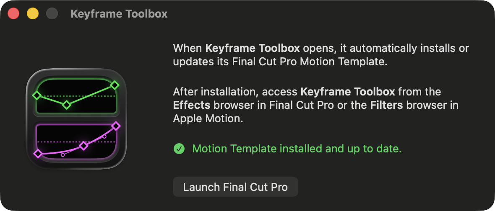
This will automatically install the Keyframe Toolbox Motion Template.
Once done, you can quit the Keyframe Toolbox application and launch Final Cut Pro.
You'll find Keyframe Toolbox in the Effects Browser.
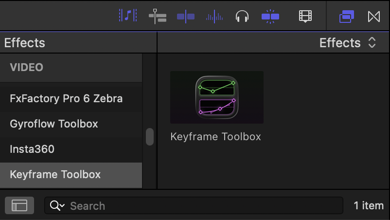
You can then apply Keyframe Toolbox to any effect and away you go! If you want to use it regularly, you can right-click it an choose Make Default Video Effect. To apply it, you can then use OPTION (⌥)-E.
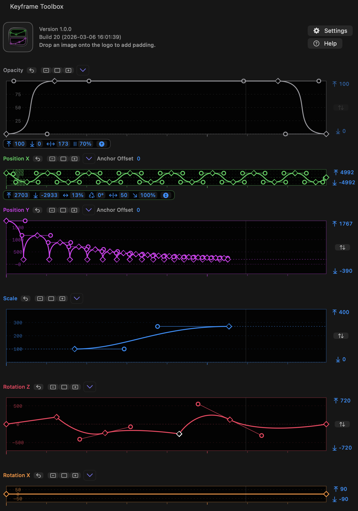
Introducing Keyframe Toolbox
This effect is built to let you use familiar beziér keyframes and handles to control common properties in Final Cut Pro.
In the Keyframe Toolbox interface you'll see several graphs, each one controlling a separate parameter.
In the current effect, graphs include Opacity, Position X, Position Y, Scale, Rotation Z, Rotation X, Rotation Y, and Blur.
- (Note that Rotation, in a 2D context, is actually Rotation around the Z axis.)
Because Final Cut Pro captures regular keystrokes before we can, we've made heavy use of modifier keys. Tooltips are present, so if you hover over an icon, menu or graph item, you'll be told what modifier keys do in that particular context.
Right now, OPTION (⌥) and COMMAND (⌘) are equivalent, to hopefully make it easier for users of both Motion and After Effects to work with handles. SHIFT (⇧) is a constraining modifier, as usual, and CONTROL (⌃)-clicking a keyframe or handle deletes it, while right-clicking pops up a menu. (This means that CONTROL (⌃)-clicking does not pop up the right-click menu. If you don't have right-click behavior set up on your pointing device (such as a two-finger click on a trackpad) you can use the menu above each graph instead of right-clicking.)
Preparing still images
If you're working with regular video clips in the same aspect ratio as your canvas, you won't have any problems. You also probably won't have any problems if you're working in a different aspect ratio, and have set Spatial Conform to Fill. If that's your plan, skip straight to the next section!
However, there's a specific situation, common in animation, which requires some special treatment. Because effects can only act on the clip they've been applied to, they are limited to the size of the frame the image takes up. It's not possible to move an image outside that area — it just clips off at the original border. Setting Spatial Conform to Fill does solve this problem, but can cause quality issues, as it can mean the image is scaled down and then scaled back up in some contexts.
To deal with this, the standard workflow for many animation plug-ins based on effects is to place each element in a compound clip, and that works here too. You can select any smaller elements and place them in a compound clip before applying Keyframe Toolbox. However, this can introduce some complexity around the sizing of compound clips and also timing.
As a better solution, we've added a feature to pad any still image with extra space, making it the same aspect ratio as the timeline the effect is placed in. This means you won't need to change Spatial Conform before applying Keyframe Toolbox, and you won't hit any scaling quality problems.
To use it, you'll need to have applied Keyframe Toolbox to a clip in your timeline — even on a temporary clip. With that in place, drag an image from the Browser to the logo at the top of the effect. (This image will need to be in the same Event as your current Project, due to how FCP works.)
Keyframe Toolbox will then send the new image back to a new event called "images with padding". The new image also has its new resolution as part of its name. You can now add this image to your timeline instead of your original image.
Keyframe graph basics
Keyframes remembers values at points in time.
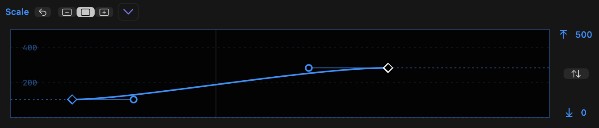
- Each graph starts with has a keyframe at the start (left) and end (right) and a line connecting them.
- The graph width maps to the clip width, while the graph height maps to the values of the property, within the limits shown to the right of that graph.
- Linear keyframes transition values directly, in a straight line, while non-linear keyframes have handles that influence curves, creating smoother transitions between values.
- At least two keyframes must remain in the graph, so the first and last keyframes cannot be deleted until other keyframes are added.
- However, the first and last keyframes can be moved horizontally, so the first keyframe can start later than 0% and the last keyframe can end before 100%.
- If the playhead is over the clip, a line briefly indicates the position of the timeline playhead in relation to the clip. The line will update to the correct position as you move keyframes around, to allow you to snap keyframes to the playhead.
- This "mini playhead" can be moved by using the scroll wheel as you hold
COMMANDwhile the pointer is over a graph. You can also holdCOMMANDwhile moving two fingers on a trackpad.New in v1.1 - Alternatively, activate Live Scrubbing with the button at the top, or press
CAPS LOCKto toggle it. When Live Scrubbing is active, moving the mouse over a graph moves the playhead. - As you drag a keyframe, hold
SHIFTto enable snapping to the playhead. - Opacity has a fixed 0..100 range, while the other properties use defaults that should make sense, based on the clip properties. (Note that Position values are calculated based on the clip resolution, not the timeline resolution.
- All other limits can be changed by dragging them, horizontally or vertically. Hold
OPTIONas you drag to change both sides in opposite directions. - Press the button between the limits to fit the graph to the current values within it, plus a small buffer.
- Tick marks underneath each graph indicate seconds, with an extra indication 5-second and 10-second intervals.
Resetting and scaling the graphs
Each graph can be reset, zoomed horizontally, and shown in one of three vertical sizes.
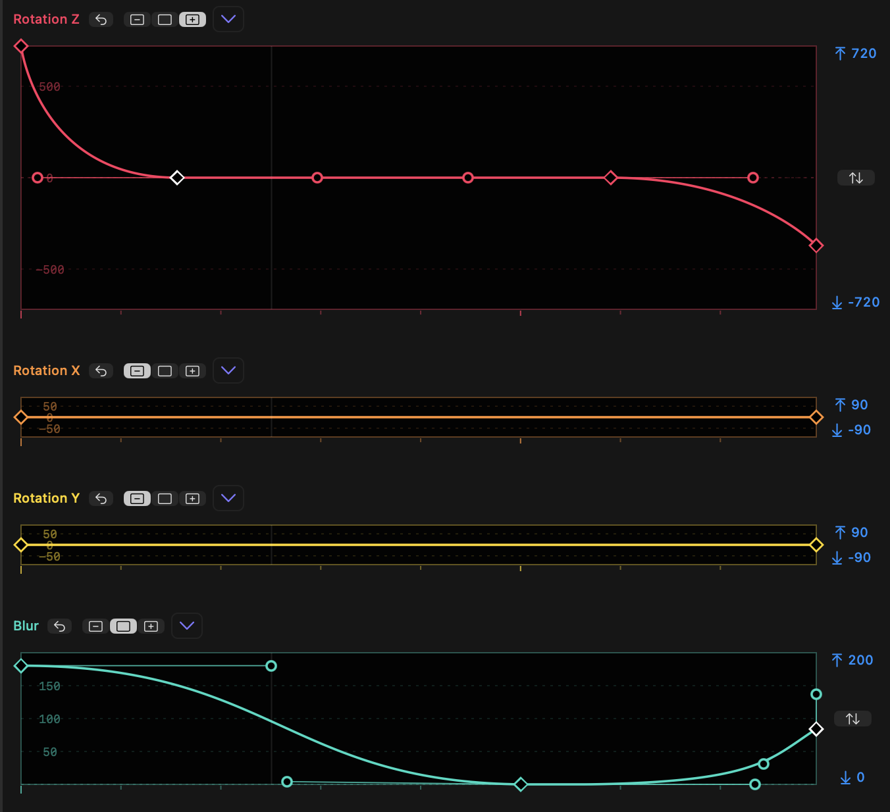
- Each property graph can be reset using the reset button next to its name.
SHIFT-click any graph's reset button to reset all graphs at once.- To the right of the reset button, you'll see a three-position toggle displaying the current graph height: Minimised, Standard or Expanded.
- When Minimized, the "Fit" button within the upper and lower limits is not available. All other controls work in any size.
SHIFT-click on a toggle to force all graphs to that size.OPTION-click on a toggle to set that graph to the chosen size and minimize all other graphs.- As it's not possible to show all graphs at larger sizes, when graphs move to Standard or Expanded size, other graphs may shrink.
- Graphs can be zoomed horizontally. When zoomed in, a scroll bar appears below all graphs, and the tick marks reflect the new zoom state.
New in v1.1- To zoom all graphs in or out, while the pointer is over a graph:
- Spread two fingers together or apart on a trackpad.
- Hold
OPTIONas you scroll with a mouse wheel. - Hold
OPTIONas you scroll by moving two fingers together vertically on a trackpad. - Double-click in empty space, to show 25% of the width of the full graph. Double-click again to zoom out.
- To scroll all graphs, while zoomed in with the pointer over a graph:
- Move two fingers on a trackpad horizontall
- Hold
SHIFTas you scroll with a mouse wheel. - Hold
SHIFTas you scroll by moving two fingers together vertically on a trackpad.
- To zoom all graphs in or out, while the pointer is over a graph:
Adding and moving keyframes
Keyframes can be moved and new keyframes can be added.
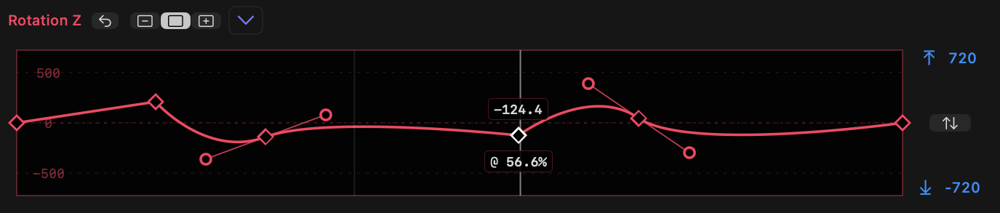
- Double-click on a graph line to add a linear keyframe and remember a value at a point in time.
- Click and drag on a keyframe to move it.
- During the drag, numbers will appear showing the keyfrane's value (above) and time (below).
SHIFT-drag on a keyframe to lock movement to horizontal (time) or vertical (value) movement.- If you move a keyframe on one graph to a position near a keyframe on another graph, a vertical line will appear.
- If
SHIFTis now held down, the keyframe will snap to this line to align with keyframes on other properties. - Dragging a keyframe and adding
SHIFTwhile dragging will also snap to the line that indicates the playhead position, if present. This allows you to snap a keyframe to the current playhead position. - Drag a line connnecting two keyframes to move both keyframes together.
- Click a line connnecting two keyframes to select both keyframes.
New in v1.1 - Click on the name of a property at the top of a graph to create a new keyframe at the current time.
New in v1.1 SHIFT-click on the name of a property at the top of a graph to create a new keyframe at the current time on all graphs.New in v1.1
Non-linear (smooth) keyframes
Handles connected to keyframes control the graph curve that controls how one value changes into another.
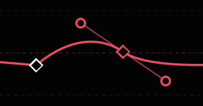
OPTION- orCOMMAND-drag on a line to add a non-linear keyframe, dragging out two symmetric handles to create a bezier curve.OPTION- orCOMMAND-drag on a keyframe to add handles to a linear keyframe, or reset and redraw the handles on an existing non-linear keyframe.- Optionally, hold
SHIFTwhile doing this to lock the curve to horizontal (0°). OPTION- orCOMMAND-click on a keyframe to remove handles and reset the keyframe to linear.OPTION- orCOMMAND-drag on a handle to split a handle pair and make it asymmetric.SHIFT-drag a handle to maintain its current angle and only change distance.
Deleting keyframes and handles
Keyframes and handles can be deleted.
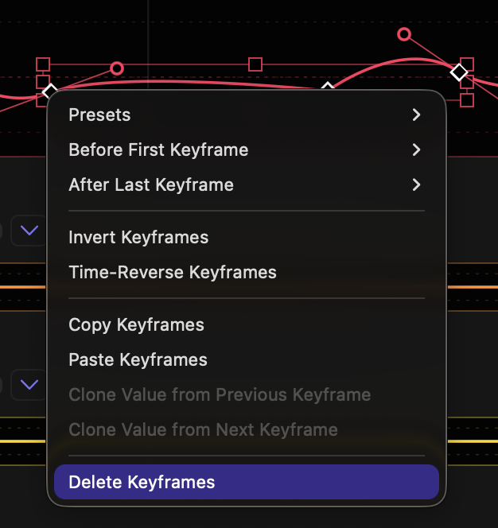
CONTROL-click on a keyframe to delete it.- Right-click on one or more selected keyframe and select Delete Keyframe(s) to delete them.
CONTROL-click on a handle to delete it. This operation only deletes one handle in a symmetric pair.COMNMAND- orOPTION-click on a keyframe to delete its handles and convert it to linear.- The first and last keyframes can be deleted just like other keyframes, but at least two keyframes must remain — there must be a first and a last keyframe.
Working with precision
Exact numbers can be entered for keyframes and handles.
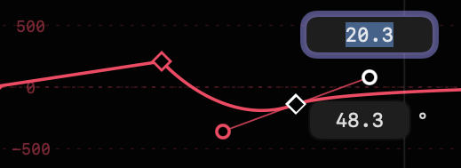
- Double-click on any keyframe to see its value (above) and time (below).
- If Absolute Timing is active in Settings, the time value will be shown as a number of frames (editable) and also below that field as abbreviated timecode.
New in v1.1
- If Absolute Timing is active in Settings, the time value will be shown as a number of frames (editable) and also below that field as abbreviated timecode.
- Double-click on any handle to see its distance (above) and angle (below).
- In both these cases, type in new values to change them, then approve the change by presing
RETURNorENTER, or cancel the change withESCAPE. - Alternatively, use up and down arrows to change the values by 1,
SHIFT-up andSHIFT-down arrows to change the values by 10, andNew in v1.1OPTION-up andOPTION-down arrows to change the values by 100. - When using up and down arrows to change values, changes are immediately visible.
New in v1.1 - When numeric entry is active, use left and right arrows to move to the previous or next keyframe or handle.
New in v1.1 - If the playhead is over a keyframe (for example if the graph name has just been clicked to create a new keyframe) then clicking the property name activates numeric entry.
New in v1.1
Selecting, moving and scaling keyframes
Multiple keyframes can be selected and manipulated.
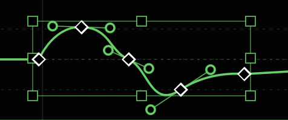
- Clicking a keyframe selects it.
SHIFT-clicking additional keyframes selects additional keyframes.- Drag from empty space across one or more keyframes to create a selection marquee that selectes enclosed keyframes.
- Hold
SHIFTas you drag a selection box to select additional keyframes. - When multiple keyframes have been selected, a bounding box appears that allows the selected keyframes to be scaled and/or moved.
- Drag one of the selected keyframes to move them, or drag the sides or corners of the bounding box to move the contained keyframes proportionally to one another.
- When resizing a group of keyframes, handles also resize proportionally.
New in v1.1 - Hold
SHIFTas you drag one of multiple selected keyframes to constrain to horizontal or vertical movement. - Right-click to delete, copy, or perform other operations on multiple keyframes at once.
- Click elsewhere in the graph to dismiss the bounding box.
Using the graph menu
Each graph has a menu that enables some advanced features.
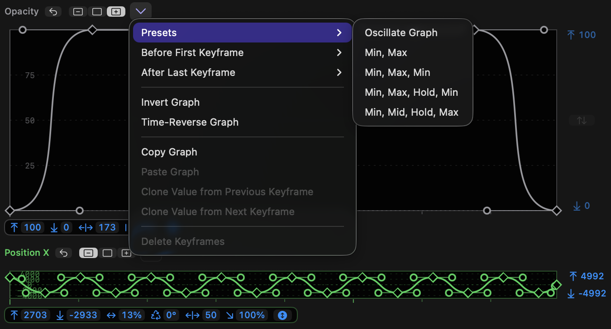
-
The graph menu can be accessed by the menu to the right of the toggle buttons, or by right-clicking on the graph.
-
Many of these menu options are context-sensitive. If you select one or more keyframes, those keyframes will be affected. If no keyframes are selected, the entire graph is affected.
-
When a single keyframe is selected, use
Clone Value from Previous KeyframeorClone Value from Next Keyframeto simulate a Hold keyframe. -
If no keyframes are selected, an entire graph can be reversed in time by choosing
Time-Reverse Graph, or flipped vertically by choosingInvert Graph. -
If two or more contiguous keyframes are selected, they can be reversed by choosing
Time-Reverse Keyframes, or flipped vertically by choosingInvert Keyframes. -
Use
Copy KeyframesorCopy Graphto copy keyframes from a graph. -
Use
Paste KeyframesorPaste Graphto paste copied keyframes from one graph into another graph. One or more keyframes must be selected for Paste Keyframes to be available. -
Clone Value from Previous KeyframeandClone Value from Next Keyframechange the value of the selected keyframe to a the value or a neighbouring keyframe. -
Presets and Before First Keyframe and After Last Keyframe are discussed in the following sections.
Presets
To create flexible keyframe graphs based on common animation patterns.
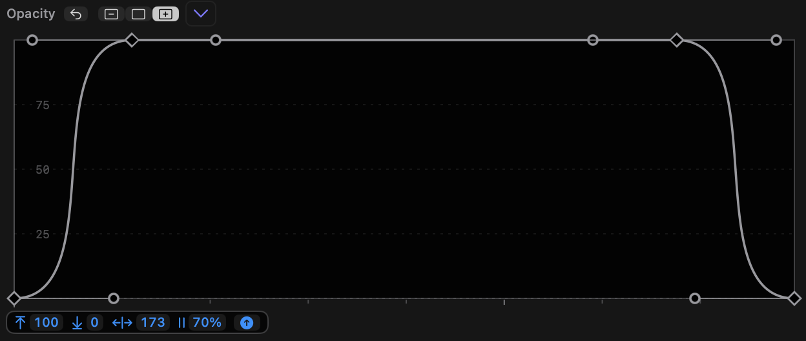
- The graph menu and the right-click menu both contain a Presets submenu.
- Adjusting the controls on these presets allows many common animation patterns to be created, including bounces, fades up and down moves in and out, and more.
- If no keyframes are selected, these presets replace the entire graph.
- If two or more contiguous keyframes are selected, these presets apply within the selected keyframe range, using the width and height of the selected keyframes. This allows more than one preset to be used in the same graph.
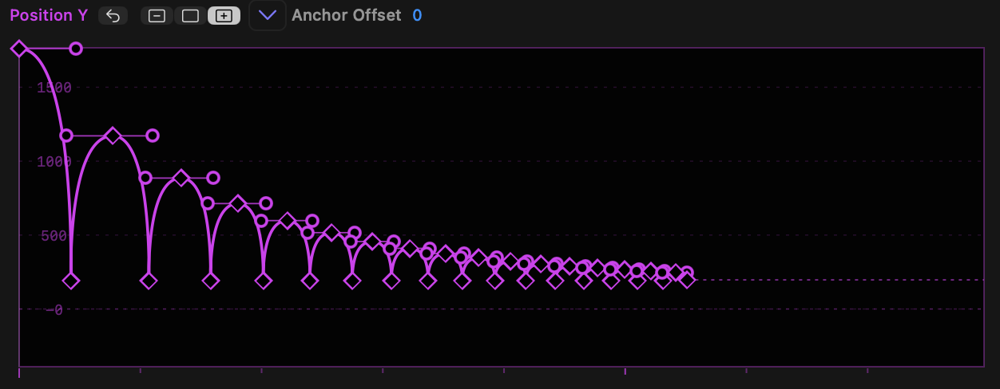
- The presets include:
- Oscillate (repeated movements up and down, with modes for bouncing)
- Min, Max (move in one direction)
- Min, Max, Min (move in one direction and then immediately back)
- Min, Max, Hold, Min (move in one direction, pause, move back)
- Min, Mid, Hold, Max (move halfway, pause, move further)
- Note that all these presets include a toggle to invert the graph.
- While it’s possible to control the upper and lower limits of any presets after choosing it, selecting multiple keyframes before choosing a preset sets the limits from keyframe values.
- In each case, when a preset is chosen, several draggable options appear underneath each graph, including some of:
- Upper limit
- Lower limit (hold
SHIFTwhile dragging to change limits quickly, but they cannot exceed current graph limits) - Bend (handle size/amount of smoothing)
- Wavelength
- Phase
- Decay
- Graph type or Flip — use this to make a preset work in the opposite way, so Min, Max becomes Max, Min.
- A preset's options can be repeatedly changed until a keyframe is moved or the clip selection in FCP is changed.
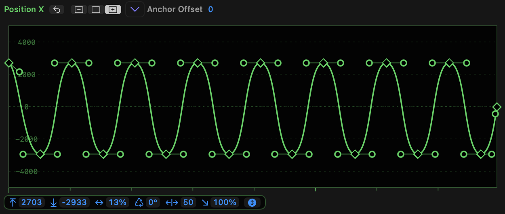
- In Oscillate, the options are:
- Upper limit
- Lower limit
- Wavelength
- Phase
- Bend (handle strength)
- Decay
- Oscillate mode, which cycles through a Sine wave, a bounce down and a bounce up
- In Min, Max and Min, Max, Min, the options are:
- Upper limit
- Lower limit
- Bend (handle strength)
- A toggle to flip the graph, reversing Min and Max
- In Min, Max, Hold, Min and Min, Mid, Hold, Max, the options are:
- Upper limit
- Lower limit
- Bend (handle strength)
- Hold duration (in %)
- A toggle to flip the graph, reversing Min and Max
- Remember that when a single keyframe is adjusted, the controls disappear. Simply select the keyframes and choose the preset once more.
Custom Presets
- Custom presets can be saved.
New in v1.1- With no keyframes selected, or with two or more keyframes selected, choose Save Preset and give it a name.
- These presets appear in the menu below the built-in presets, and when applied, you’ll be able to control limits, scale handles up or down, and flip it, as you can with the other presets.
- Similar to other presets, selecting multiple keyframes before choosing a preset sets the horizontal and vertical limits from keyframe values.
- Choose Manage Presets, in the same submenu, to reveal a folder containing all your presets.
- You can rename your presets by renaming these files.
- You can organise your presets by creating new subfolders.
- Presets are small plain text files, and can be easily shared between users.
Easing
Allowing predictable curve patterns to be used across one or more keyframes. New in v1.1

- The graph menu and the right-click menu both contain an Easing submenu.
New in v1.1 - The Easing submenu can be used in two contexts: referring to curves, and referring to handles on a keyframe. To refer to curves, select two or more keyframes before choosing the Easing submenu; to refer to handles on a keyframe, select just one keyframe before choosing the Easing submenu.
- If two or more keyframes are selected, easing affects the curves between the selected keyframes, so any handle before the first selected keyframe or after the last selected keyframe will be ignored.
- In this mode, options include Ease In+Out, Ease In and Ease Out.
- All options here affect the handles on both sides of each selected curve.
- However, if a single keyframe is selected, these menu items now refer to the handles around that keyframe. The submenu items change to reflect this, and now read Ease Left+Right, Ease Left and Ease Right.
- Ease Left means the handle to the left of the keyframe and Ease Right means the handle to the right of the keyframe.
- Each submenu contains:
- Linear
- Sine
- Quad
- Cubic
- Quart
- Quint
- Circ
- Expo
- Back
- For an illustration of how these graphs should appear, refer to https://easings.net.
- Important: The easing curves shown here refers to the curve between two keyframes, not to the handles on a keyframe.
Before First Keyframe and After Last Keyframe
To control a virtual keyframe graph beyond the first and last keyframes.
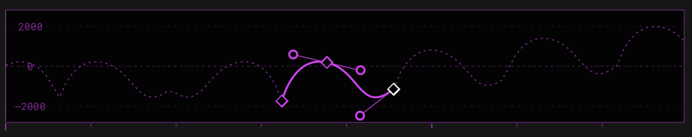
- If the first keyframe is moved to the right or the last keyframe is moved to the left, a dashed line displays the virtual graph beyond the bounds of the real graph.
- This strategy allows an animation to be repeated many times, if desired.
- By default, this graph is a constant line, but the graph and right-click menus allow two other options to be chosen:
- Ping-Pong, which repeats the real graph backwards, then forwards, repeating while time permits.
- Progressive, which repeats the real graph, but transposed so that the first virtual keyframe is positioned on the real final keyframe. This graph also repeats while time permits.
- You can create new keyframes on the virtual graph in the standard ways.
Settings
Settings gives access to advanced features.
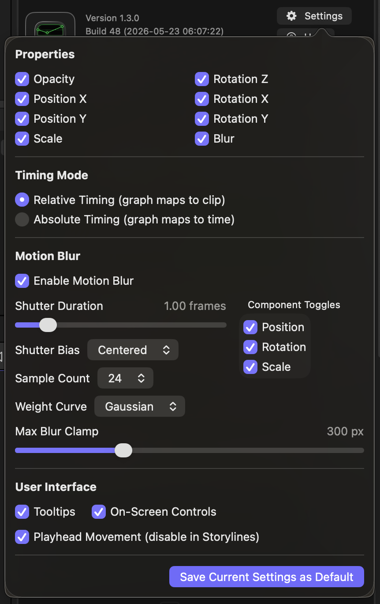
- Click the Settings button to pop up a panel with two sections: Properties and Motion Blur.
- Properties allows some graphs to be hidden by unchecking them. At least one graph must remain active.
- Note that those graphs, if keyframes have been changed, will still have an effect if deactivated.
- Currently, all graphs are activated by default.
- Timing Mode, which allows:
Relative Timing (graph maps to clip)which is appropriate when working with still images, or you want to create a movement that spans the clip length, with that animation automatically retiming if the clip length is adjusted.Absolute Timing (graph maps to time)which is appropriate when specific animation moments must happen at particular moments in the video. If the source clip is trimmed in this mode, the graphs will be cropped, or extra space will be added around the first or last keyframes.- In Absolute Timing mode, time values are shown in frames and timecode. (If a clip is less than a minute long, only seconds and frames are shown.)
- Motion Blur, when active, creates blur on moving objects. Adjust the settings here to adjust the blur parameters.
- Help, which includes a global setting to disable tooltips, if they're bothering you.
- To save the currently chosen settings as the default for new instances of Keyframe Toolbox, press the button at the bottom of the panel: Save Current Settings as Default.
New in v1.1